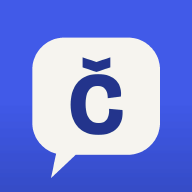

This page is provided by Czechify, operated by Mahesh Pathak. Account deletion is permanent and cannot be undone.
Email email.czechify@gmail.com with the subject “Czechify account deletion request”. If you linked an email address, send the request from that address so we can verify ownership. We will handle verified requests without undue delay and normally within 30 days.
If you never linked an email, the account has only a random identifier that we cannot match to an external email. Use in-app deletion while you still have access. If that is impossible, clear Czechify's app storage or uninstall it to remove the device copy; the unlinked anonymous cloud account and its synced data are scheduled for automatic deletion after 90 days without use.
Never send your password, access token, recording, or identity document. We do not need them for an ordinary deletion request. We may ask a limited follow-up question if needed to verify account ownership.
If you keep using Czechify after deletion, the app creates a new, empty anonymous account. It does not restore the deleted account or its progress.
Deletion removes the account and data from Czechify's live Supabase tables. Deleted records may remain temporarily in isolated provider backups or security logs until their normal retention windows expire and are not available as ordinary user records.
Czechify does not store AI tutor requests or cloud-pronunciation recordings in its cloud database. Requests sent to Scaleway or OpenAI do not contain your Czechify account ID or linked email in the request body, so we generally cannot identify a particular provider-side request as yours after processing. OpenAI may retain API data for up to 30 days for abuse monitoring unless zero data retention applies. Scaleway's default Zero Data Retention policy says AI prompts and outputs are not retained in ordinary operation; anonymised usage metadata may remain for up to six months, and relevant request content may be kept for up to two weeks in rare error, security, harmful-content, or misuse investigations.
If you want a copy before deletion, use Settings → Account & data → Export. The export contains data held in the cloud account. Local-only AI chat history, exam results, settings, and downloaded audio are not part of that cloud export.
For details about processing, retention, and your GDPR rights, read the Czechify Privacy Policy.